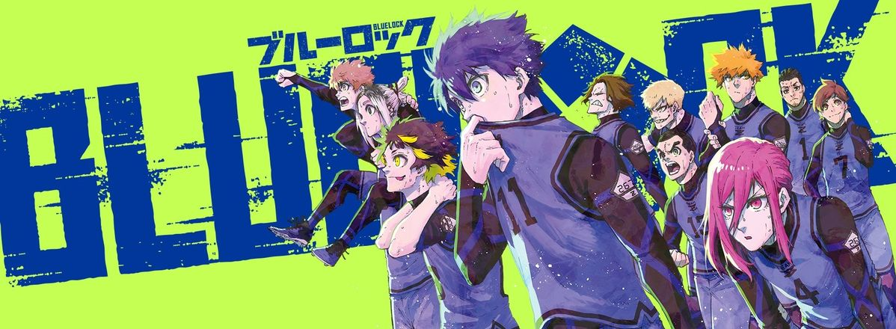

Trailer :
Genres :
- Action
- Drame
- Psychologique
- Shōnen
- Sport
Synopsis :
Suite à l'élimination du Japon lors de la Coupe du monde 2018, l'Union japonaise de football lance un projet radical nommé Blue Lock.
Dirigé par l'entraîneur excentrique Jinpachi Ego, ce programme rassemble 300 des meilleurs attaquants lycéens du pays dans une installation isolée.
L'objectif unique est de créer l'attaquant ultime, capable de mener le Japon à la victoire mondiale par son égoïsme et son individualisme, brisant ainsi la tradition du jeu collectif japonais.
Personnages :
Yoichi Isagi
C'est le protagoniste de l'histoire. Attaquant lycéen, il se distingue par sa grande intelligence de jeu et sa capacité à analyser le terrain en temps réel. Au début du projet, il lutte contre son habitude de trop penser aux autres, ce qui l'empêche de tirer quand il le faut. Son parcours consiste à éveiller son égoïsme pour devenir le centre du jeu et marquer le but décisif.
Meguru Bachira
Un attaquant excentrique et très créatif, souvent perçu comme un génie instinctif. Bachira joue avec le sourire et semble dialoguer avec un "monstre" intérieur qui le guide dans ses dribbles imprévisibles. Il cherche avant tout un partenaire de jeu capable de comprendre et de suivre son rythme effréné, faisant de lui un élément aussi surprenant qu'indispensable.
Hyoma Chigiri
Surnommé la "Pépite Vierge", Chigiri est un attaquant doté d'une vitesse de course fulgurante. Ancien prodige ayant perdu confiance en lui suite à une grave blessure au genou, il rejoint Blue Lock pour retrouver sa passion. Son jeu repose sur des appels en profondeur et des courses explosives qu'il est presque impossible à arrêter une fois lancé.
Seishiro Nagi
Un jeune prodige au talent naturel exceptionnel, découvert presque par hasard. Nagi se caractérise par son incroyable contrôle de balle et sa capacité à arrêter le ballon comme s'il était collé à son pied, le tout avec un minimum d'effort physique. Très passif et manquant initialement de motivation, il possède un potentiel brut qui effraie ses adversaires dès qu'il commence à s'intéresser au jeu.
Rensuke Kunigami
Connu sous le nom de "Héros du Terrain", Kunigami incarne l'attaquant idéal physiquement : grand, puissant et technique. Il suit une philosophie héroïque stricte et cherche à gagner de manière juste et impressionnante. Son physique athlétique et son tir puissant en font un rival redoutable et un modèle de perfection physique dans le projet.
Anime :
Saison 1 : 24 épisodes
Saison 2 : 14 épisodes
Manga :
Nombre total de tomes : 39
Statut : en cours de publication
Auteur :
Scénario : Muneyuki Kaneshiro
Dessin : Yusuke Nomura
Note :
7.5/10
Commentaire :
Vraiment cool mise à part l'animation.
l